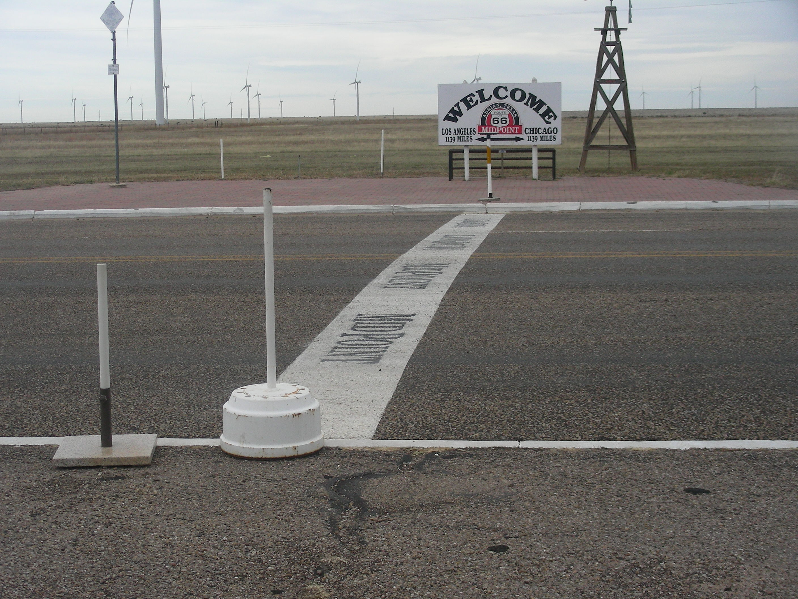
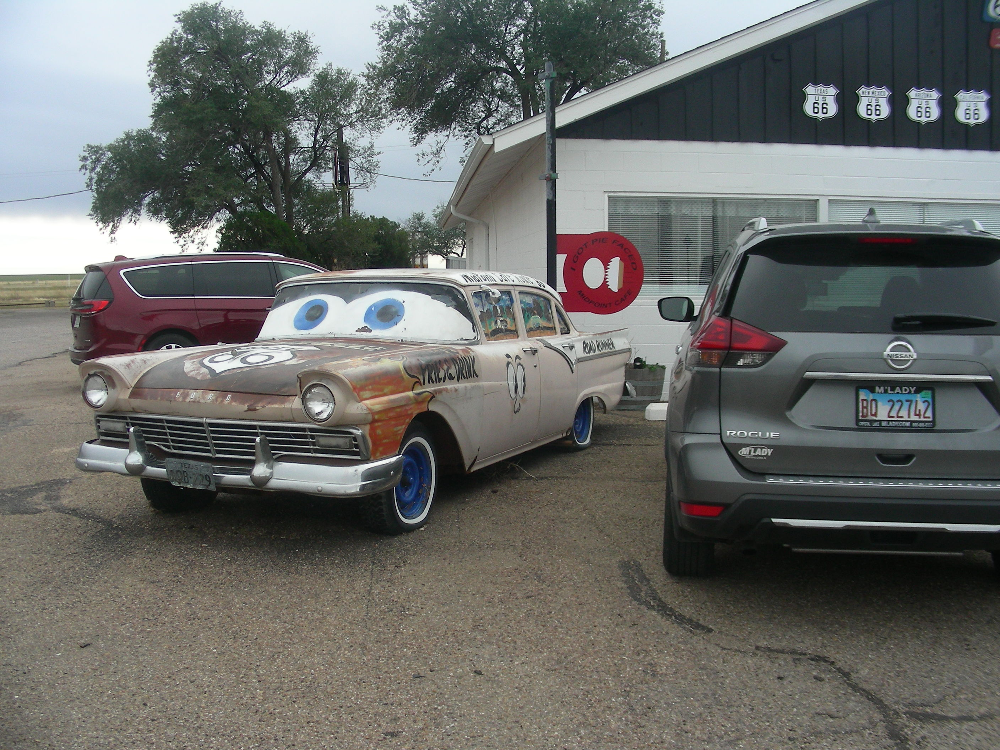
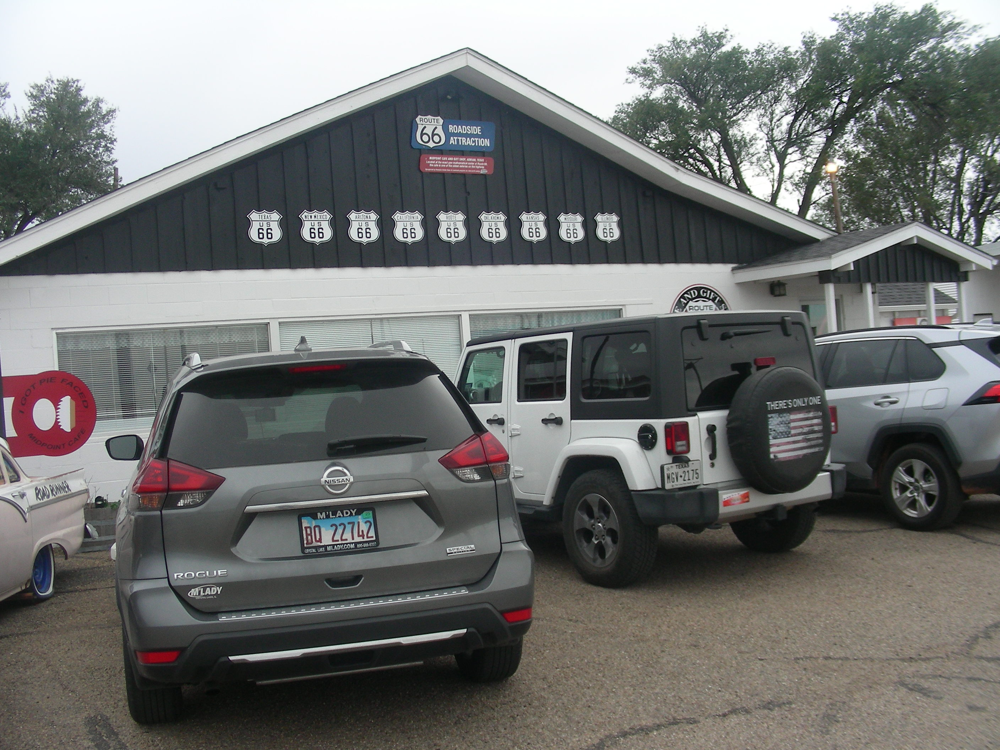
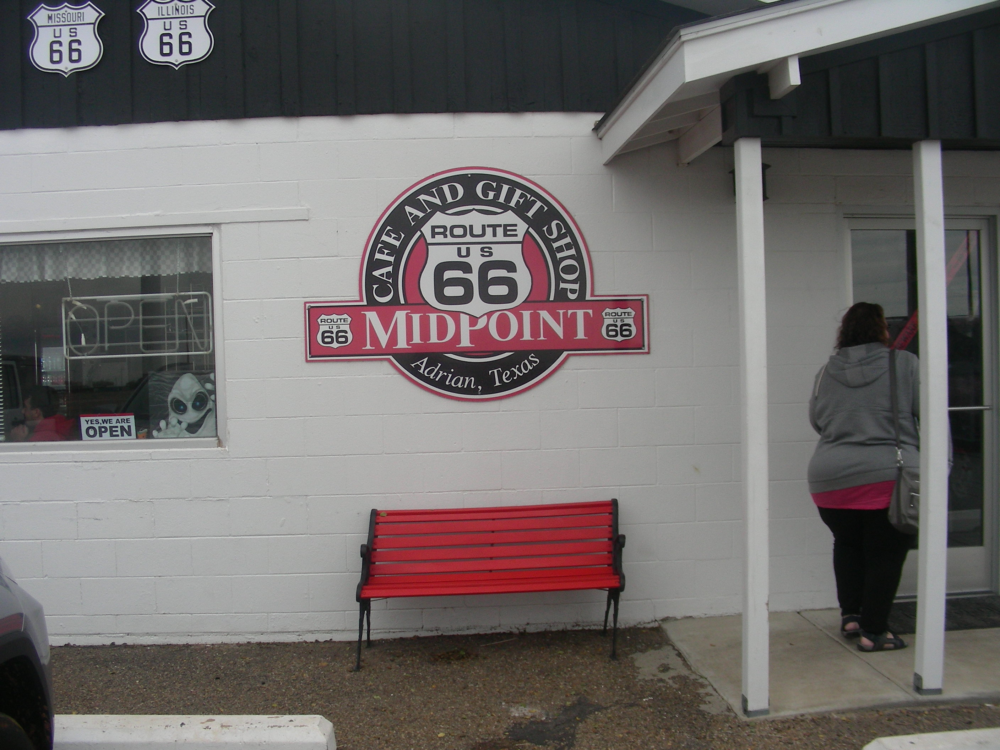
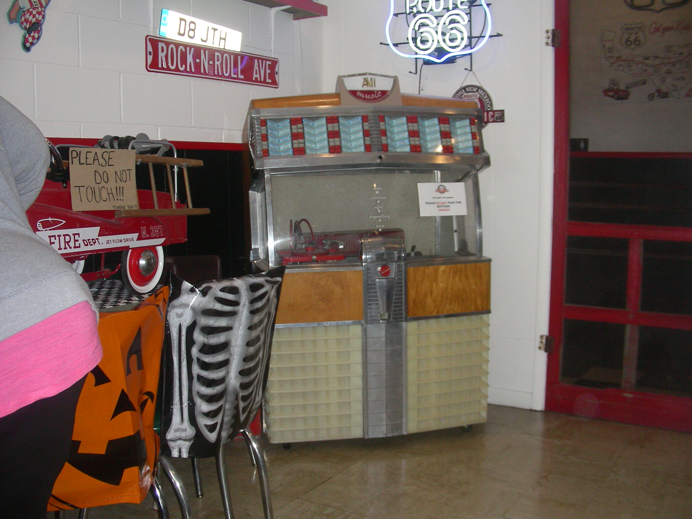
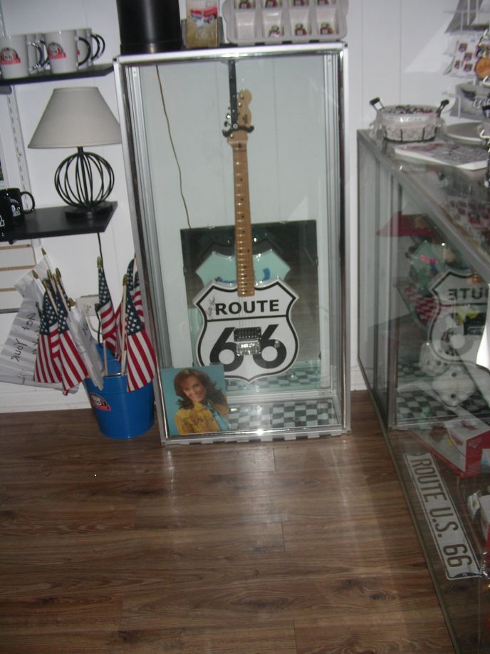
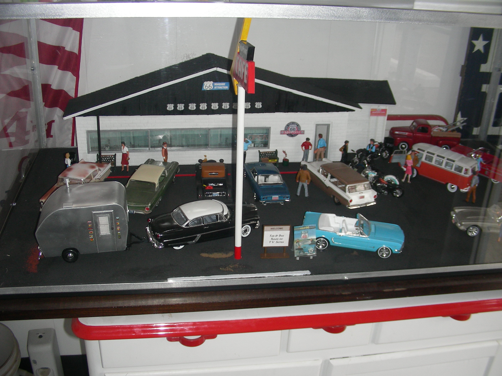

idn’t
Stop
idn’t
StopDay 5 Thursday Oct 27
Amarillo, Tx to Santa Fe, NM 325 miles
Attractions-
Cadillac Ranch – Cadillacs in Ground Amarillo, TX
Dots Mini Museum and Colletables Vega, Tx
Roosters Old Restaurant in Gas Station Vega, TX
Mid Point Cafe Half way point Adrian, Tx
New Mexico Route 66 Museum Tucumcari, NM
College Dinosaur Museum Tucumcari, NM
Tee Pee Curios – Rout 66 Junk
Days Inn Santa Fe
Crappy Burger Dinner
Famous Cadillac Ranch
I just think this is one of those defining characteristics of America, like Graceland and Elvis. You just have to check it out. We did. It was kind of a rainy day, and the Caddys are somewhat off the highway, so we had to walk through a little bit of muddy terrain, but it was worth it to spray paint some Cadillacs. They actually sell spray paint somewhere around there. We just used an old, not quite used up, can. It was fun.
D
idn’t
Stop
We didn’t stop at Dots or Roosters. Got a couple of pics, though. If someone stops, and we missed something; let us know.
H
 alf
Way There
alf
Way There
The Route66 halfway point is the Mid Point Cafe in Adrian, Texas. You gotta stop here for the complete Route66 Experience. The atmosphere is totally Route66! The people are great and the diner food is superb. It’s famous for their pies. Try one.
They’ve got a gift shop there, along with all the nostalgia décor. They have a Route66 guitar signed by Lorretta Lynn. Great place to stop and have lunch.
New Mexico
Our next stop was the Route66 Museum in Tucumcari, New Mexico. This museum was a little difficult to find, as it is in the back of the building. Heads up on that one. This museum has a lot of vintage cars, including Hot Rods and Muscle cars. Pretty cool museum. They also have the Route66 guitar signed by Loretta Lynn.
C       ollege Dinosaur Museum In Tucumcari
This is a great museum full of Dinosaurs. This is definitely worth a stop. The process for creating these beautiful creatures is amazing. They also have a wonderful gift shop with some different types of items, rather than the run of the mill Route66 stuff.
G


 reat
Day With Just An Ok Ending
reat
Day With Just An Ok Ending
We ended the day by finding a room at a Days Inn in Santa Fe. The price was right and it was a good room. After checking in, we went searching for a place to eat in the vicinity. We drove around and found several good looking restaurants, but they all seemed too crowded. We couldn’t find a place to park. So, we settled for Blakes LotaBurger. The food was OK, but really wasn’t what we were looking for. For a quick burger, kind of like McDonalds, it was OK.